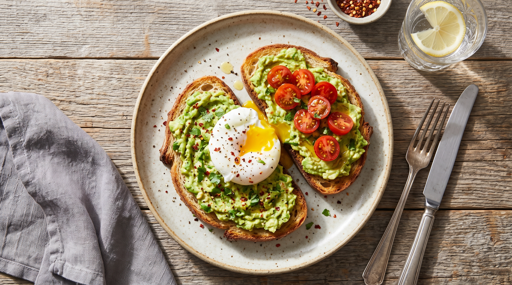
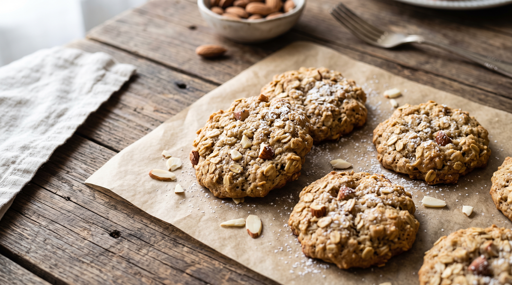

RECETA 1

Pasos
- Paso 1: Tostar dos rebanadas de pan de campo o pan integral en una tostadora o sartén.
- Paso 2: Cortar una palta por la mitad, quitar el carozo, extraer la pulpa y pisarla con sal, pimienta y un chorrito de jugo de limón.
- Paso 3: Cocinar un huevo a la plancha o escalfado (poché), según tu preferencia, intentando que la yema quede blanda.
- Paso 4: Untar una capa generosa de palta sobre cada tostada y coronar con el huevo recién hecho.
RECETA 2

Pasos
- Paso 1 : Pisar dos bananas maduras con un tenedor hasta hacerlas puré y picar un puñado de almendras.
- Paso 2 : En un bol, mezclar el puré de banana con una taza de avena y las almendras picadas hasta integrar bien todo.
- Paso 3 : Tomar pequeñas porciones con una cuchara, formar bolitas y aplastarlas sobre una bandeja para horno previamente engrasada.
- Paso 4 : Hornear a 180°C durante unos 15 minutos, o hasta que los bordes se vean dorados.